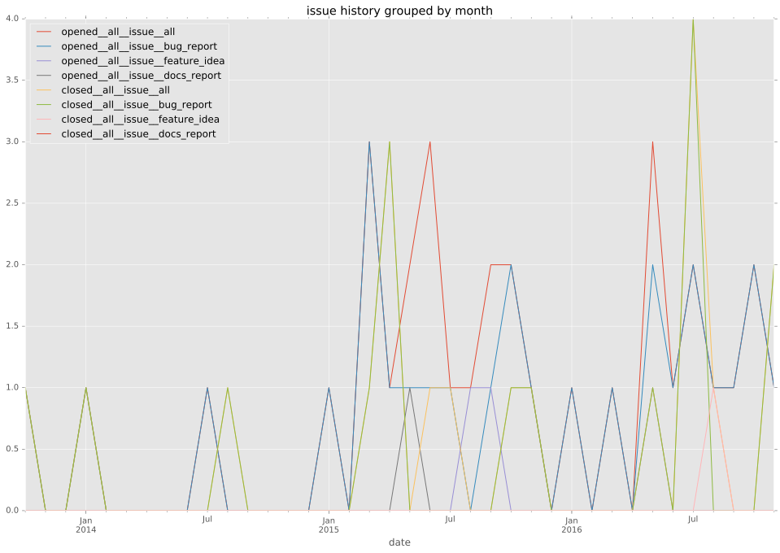
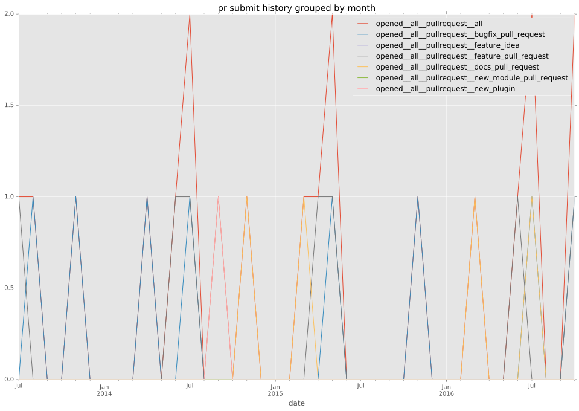
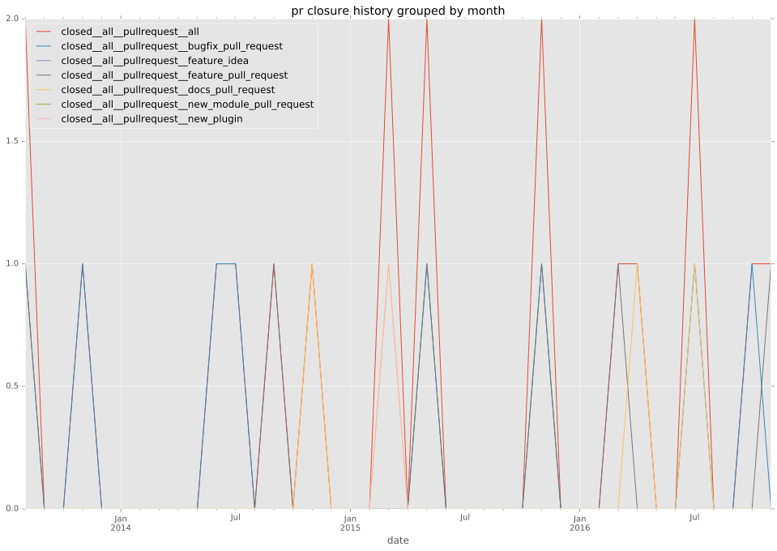
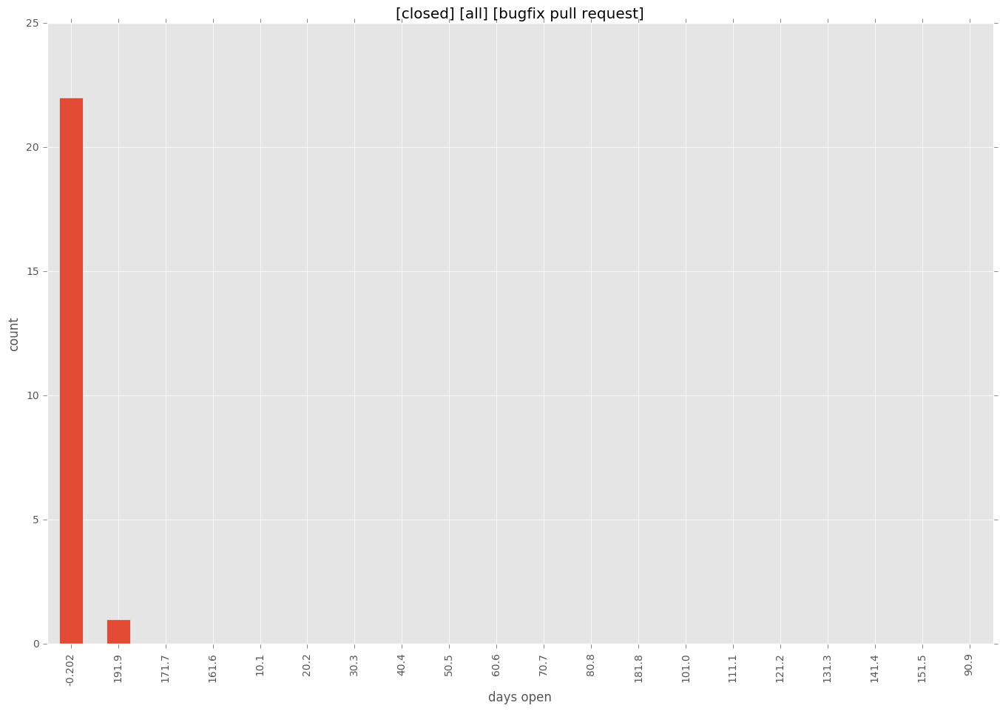

authors
maintainers
- mcv21
contributors
- costela : 21 commits
- bcoca : 9 commits
- chris-l-weber : 5 commits
- mscherer : 3 commits
- tkellen : 1 commits
- sander : 1 commits
- davidfischer-ch : 1 commits
total issue counts
unknown: 1
feature pull request: 11
docs report: 1
pullrequest: 41
docs pull request: 4
bugfix pull request: 24
feature idea: 3
issue: 31
new plugin: 1
bug report: 27
issue history

pullrequest history


days open by issue type
bugfix pull request
count: 40
std: 31.9040126887
min: 0
max: 202
median: 0.0
mean: 5.325
all
count: 80
std: 93.0871070217
min: 0
max: 527
median: 0.0
mean: 36.325
pullrequest
count: 0
std: nan
min: nan
max: nan
median: nan
mean: nan
docs pull request
count: 7
std: 4.60848079502
min: 0
max: 10
median: 1.0
mean: 3.28571428571
docs report
count: 1
std: nan
min: 29
max: 29
median: 29.0
mean: 29.0
feature pull request
count: 12
std: 125.786495397
min: 0
max: 313
median: 20.0
mean: 85.6666666667
feature idea
count: 1
std: nan
min: 320
max: 320
median: 320.0
mean: 320.0
issue
count: 0
std: nan
min: nan
max: nan
median: nan
mean: nan
new plugin
count: 2
std: 0.0
min: 157
max: 157
median: 157.0
mean: 157.0
bug report
count: 16
std: 135.284006815
min: 0
max: 527
median: 1.5
mean: 61.1875
closures grouped by total days open
